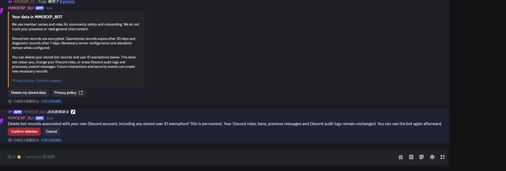

Application 1559819072168796240 · Review materials
Community safety.
Verifiable controls.
Evidence for Server Members Intent. Presence and Message Content privileged access are not requested.
Why member events are needed
The bot checks joining members and member name changes against configured impersonation rules. Staff allowlists and moderation role hierarchy are respected. These checks must work even when a suspected account does not send a message or invoke a command. Member join events also trigger a single onboarding welcome direct message in the Official Club, subject to safety checks and Discord delivery settings. Administrators can request scans of existing members.
Slash commands alone cannot supply join and update events or a server member list. Game role selection itself uses interactions and does not justify additional privileged intents.
Live Discord interface
The following capture shows the deployed bot responding to /privacy and opening its private deletion confirmation in Discord on November 11, 2026. The confirmation was cancelled. No real account records were deleted and no real member was banned for this review. A separate live /guard-check was run against the operator’s own account: its displayed name matched a configured rule and the existing user allowlist exemption was correctly recognized. This command reads member information and does not take moderation action.


Data protection checks
| Check | Method |
|---|---|
| Authenticated encryption | Write and reopen encrypted fixtures; verify sensitive strings are absent from disk; reject modified ciphertext and wrong keys. |
| Deletion scope | Use two fabricated accounts. The requesting account’s records and operational backup entries are removed; the other account remains. |
| Identity and confirmation | Reject a confirmation used by another account, a reused confirmation and an expired confirmation. |
| Failure handling | Simulate an I/O failure and verify the interface reports that deletion is incomplete. |
| Retention | Expire old fabricated moderation and diagnostic records while preserving recent records. |
| Existing safety rules | Run the existing multibrand and member event tests without logging in or taking moderation action. |
Verified release: November 11, 2026. The privacy suite passed 19 assertions and the journal archive protection suite passed 7. Five additional latest-DM-welcome privacy checks passed with fabricated members and stub delivery. Existing multibrand checks passed 79 assertions and self-check event routing passed 27. Two older suites retain the same 4 and 5 failures as the unmodified baseline; no new difference was introduced. Those suites contain expectations that do not match the current configured matching rules or guild-scoped fixtures. Tests used fabricated accounts and records, without a Discord login or moderation action.
Privacy controls and limits
The bot provides /privacy and /privacy-delete with private replies. Deletion is tied to the authenticated Discord user. It does not change roles or bans or erase Discord audit logs. Configuration needed for active operation may remain longer than 30 days. See the privacy policy for the retention schedule and support contacts.
Review evidence excludes member lists, real moderation records, credentials, encryption keys and internal host paths. Fabricated data tests are explicitly described as such.